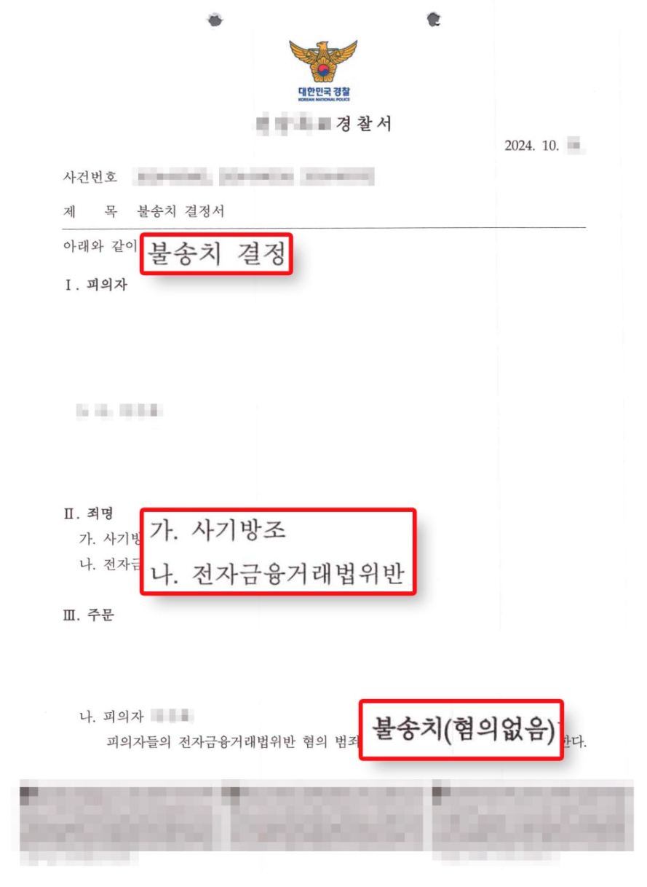

🎓 학력
- 성균관대학교 법학·언론학
- 경북대학교 법학전문대학원 (로스쿨)
- 연세대학교 법학전문대학원 법학박사 과정
💼 주요 경력
- 법무법인 노바 대표변호사 (현)
- 대법원 국선변호인 (현)
- 법무부 중소기업 법률 자문위원 (현)
- 법무법인 AK 파트너 변호사 (전)
⚖️ 주요 사례
- 쿠팡 개인정보 유출 집단소송 (약 22,000명)
- SKT 유심 개인정보 유출 집단소송 (약 27,000명)
- 인스타그램 계정 정지 피해자 대리
- 보디빌더·인플루언서 '진맨' 황철순 법률 대리
- tvN 드라마 '귀신을 팔아드립니다' OST 저작권 자문
- 대형 엔터테인먼트사 대상 저작권 분쟁 다수
- 마약 사건 항소심 감형, 보이스피싱 구속영장 기각 등
📋 자격 및 수료
🚨 지급정지 절차
사건 발생 즉시 범죄 이용 계좌에 대해 돈이 빠져나가지 못하도록 묶는 단계입니다.
- 방법: 경찰청(112), 금융감독원(1332), 또는 해당 금융회사(은행) 고객센터에 전화하여 지급정지 요청
- 핵심: 상대방의 계좌번호와 은행명만 알면 본인 계좌가 아니더라도 즉시 정지 요청이 가능합니다.
전화로 한 임시 정지는 3일 이내에 서면 접수를 하지 않으면 해제됩니다.
- 절차: 지급정지를 신청한 은행 지점을 직접 방문하여 '피해구제 신청서' 작성
- 필요 서류: 신분증 사본, 피해사실 확인원 (경찰서 발행)
- 중요: 경찰서에서 '사건사고 사실확인원'을 발급받아 은행에 제출해야 정식으로 절차가 유지됩니다.
은행이 금융감독원에 통보하면, 금감원 홈페이지에 해당 계좌의 채권소멸절차 개시를 공고합니다.
- 기간: 공고일로부터 2개월
- 해당 계좌 명의인이 이의제기를 하지 않으면, 계좌 내 예금에 대한 명의인의 권리가 소멸됩니다.
채권소멸절차가 종료되면 금융감독원에서 환급받을 금액을 결정합니다.
- 기간: 공고 종료 후 14일 이내
- 참고: 계좌에 잔액이 남아있는 범위 내에서만 환급액이 결정됩니다.
결정된 금액을 은행이 피해자의 계좌로 입금하며 모든 절차가 마무리됩니다.
- 입금 시기: 금융감독원의 환급금 결정 통지 후 즉시
🏆 성공사례
의뢰인이 보이스피싱 범행과의 연관성을 인식하지 못하였음을 소명하여 경찰 단계에서 불송치(혐의없음) 결정을 이끌어냈습니다. 검찰 송치 없이 사건이 종결되었습니다.

※ 개인정보 보호를 위해 일부 내용이 가려져 있습니다. 클릭 시 확대됩니다.
📁 사건 검토 보고서 — 전기통신금융사기 사기이용계좌 지급정지
⚖️ 법적 쟁점 및 판단
금융기관은 피해구제 신청이 접수되면 사기이용계좌로 의심할 만한 사정이 있다고 인정되는 경우 계좌 전부에 대해 즉시 지급정지 조치를 취할 의무가 있습니다. 의뢰인이 실제 보이스피싱 범행에 가담하지 않았더라도, 피해금이 의뢰인 계좌를 경유하였다면 지급정지 자체는 적법하게 이루어진 것으로 볼 수 있습니다.
가장 중요한 쟁점입니다. 의뢰인이 도박사이트 환전금을 수령한 경위에 따라 형사책임 여부가 달라집니다.
- 단순 도박사이트 이용자로서 환전을 받은 경우
보이스피싱 범행과의 연관성을 인식하지 못하였다면 형사책임이 없을 가능성이 높습니다. 다만 수사기관은 계좌 거래내역을 면밀히 분석할 것입니다. - 도박사이트 운영·관리에 관여한 경우
도박공간개설, 국민체육진흥법 위반 등 별도의 형사책임이 문제될 수 있습니다. - 보이스피싱 조직과 공모하거나 자금세탁에 가담한 경우
전기통신금융사기 공범 또는 범죄수익은닉 혐의가 성립할 수 있으며, 이 경우 1년 이상의 징역형이 선고될 수 있습니다.
보이스피싱 피해금이 계좌에 입금된 사실을 알면서 이를 인출·소비한 경우 횡령죄가 성립할 수 있습니다. 다만 의뢰인이 보이스피싱 공범인 경우에는 사기죄만 성립하고 별도의 횡령죄는 성립하지 않습니다.
형사책임과 별개로, 의뢰인 계좌에 입금된 보이스피싱 피해금 상당액에 대해 피해자로부터 부당이득반환 청구를 받을 가능성이 있습니다.
📋 실무적 대응 방안 (Action Plan)
- 1계좌 거래내역 전체 확보 — 도박사이트와의 거래 경위, 환전 수령 경위를 입증할 수 있는 자료(입출금 내역, 이용 기록, 채팅 내역 등)를 즉시 확보하십시오.
- 2금융기관에 이의신청 준비 — 지급정지에 이의가 있는 경우 금융감독원 또는 해당 금융기관에 이의신청 가능. 단, 도박사이트 이용 자체가 불법임을 감안하면 소명이 오히려 불리하게 작용할 수 있으므로 신중하게 접근해야 합니다.
- 3수사기관 연락 대비 — 지급정지 이후 수사기관으로부터 참고인 또는 피의자 조사 요청이 올 수 있습니다. 조사 전 반드시 대응 방향을 사전에 정리하십시오.
- 4도박사이트 관련 증거 보전 — 환전 요청 및 수령 과정에 관한 모든 기록(문자, 카카오톡, 이메일 등)을 절대 삭제하지 말고 보전하십시오.
- 1수사 대응 전략 수립 — 의뢰인이 보이스피싱 범행을 전혀 인식하지 못하였다는 점을 일관되게 주장하고, 이를 뒷받침하는 객관적 자료를 준비하십시오.
- 2피해자와의 합의 검토 — 수사가 개시되어 형사책임이 문제될 경우, 피해자와의 합의가 양형에 유리하게 작용할 수 있습니다.
의뢰인의 계좌가 지급정지된 것은 현행 제도상 불가피한 조치이며, 형사책임 여부는 의뢰인이 보이스피싱 범행을 인식하였는지 여부에 달려 있습니다.
도박사이트 환전 수령 경위에 관한 자료를 즉시 확보하고, 수사기관 조사에 대비한 일관된 대응 방향을 수립하는 것이 최우선 과제입니다.
📞 법률 상담 안내
보이스피싱 피해 회복부터 형사·민사 전반에 걸친 법률 문제까지
이돈호 대표변호사가 현실적인 해법을 제시합니다.